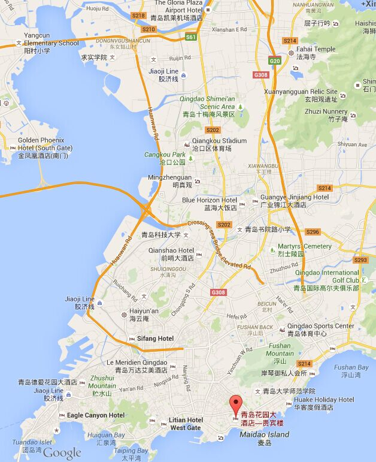

The conference will be held in Qingdao Garden Hotel, Qingdao, China.
Address: No. 6 ZhangHua Road, Shinan, Qingdao, China, 266071.
The address of the hotel in Chinese: 青岛花园大酒店，青岛市市南区彰化路六号
Special Rate for WAIM2015 (June 7-10):
- Business Room 490RMB/night
- Deluxe Twin 350RMB/night
- Guest Room 220RMB/night
* Free Buffet Breakfast and WIFI are included in the special rate.
Reservation instructions will come soon.

Qingdao Garden Hotel is located 15km from Qingdao Train Station, and 26 km from the Qingdao Airport. It is always wise to take a taxi to the hotel, which costs around 25RMB from train station and 70RMB from the airport. Qingdao Garden Hotel is surrounded by a number of attractions, such as Book City (1.7km), Olympic Sailing Center (1.9km), Jusco Supermarket (2.2km), and Qingdao Polar Ocean World (2.4km).